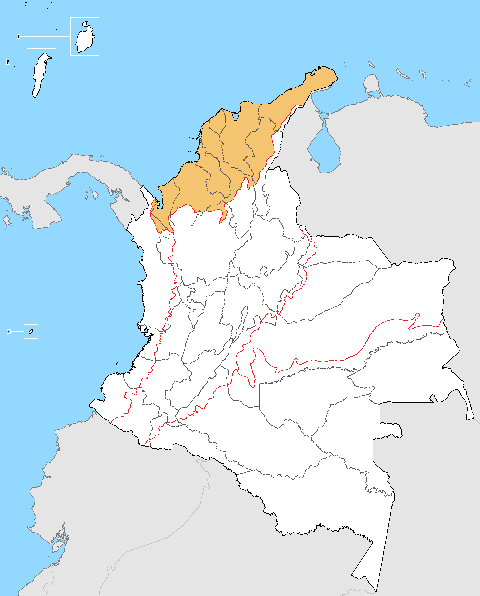
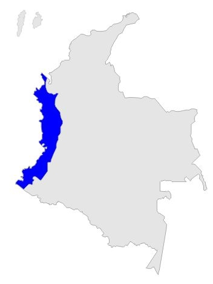
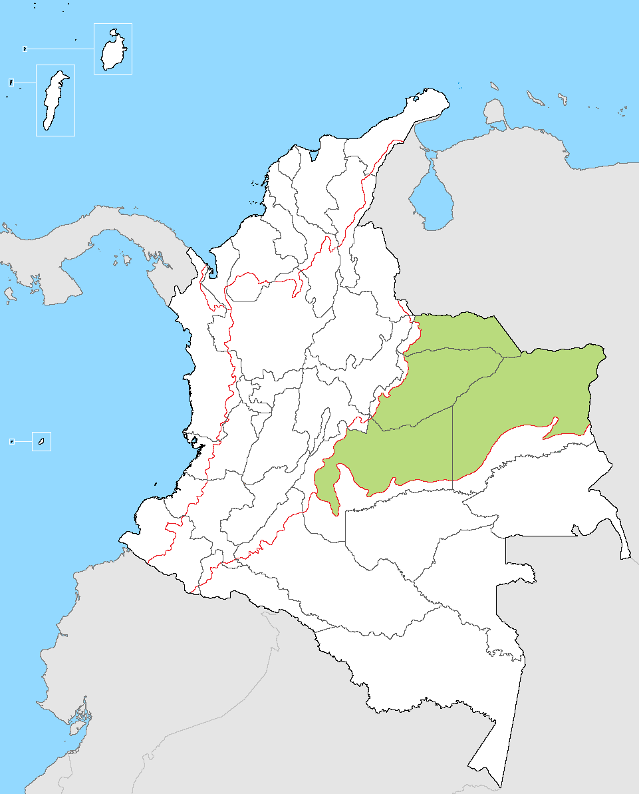
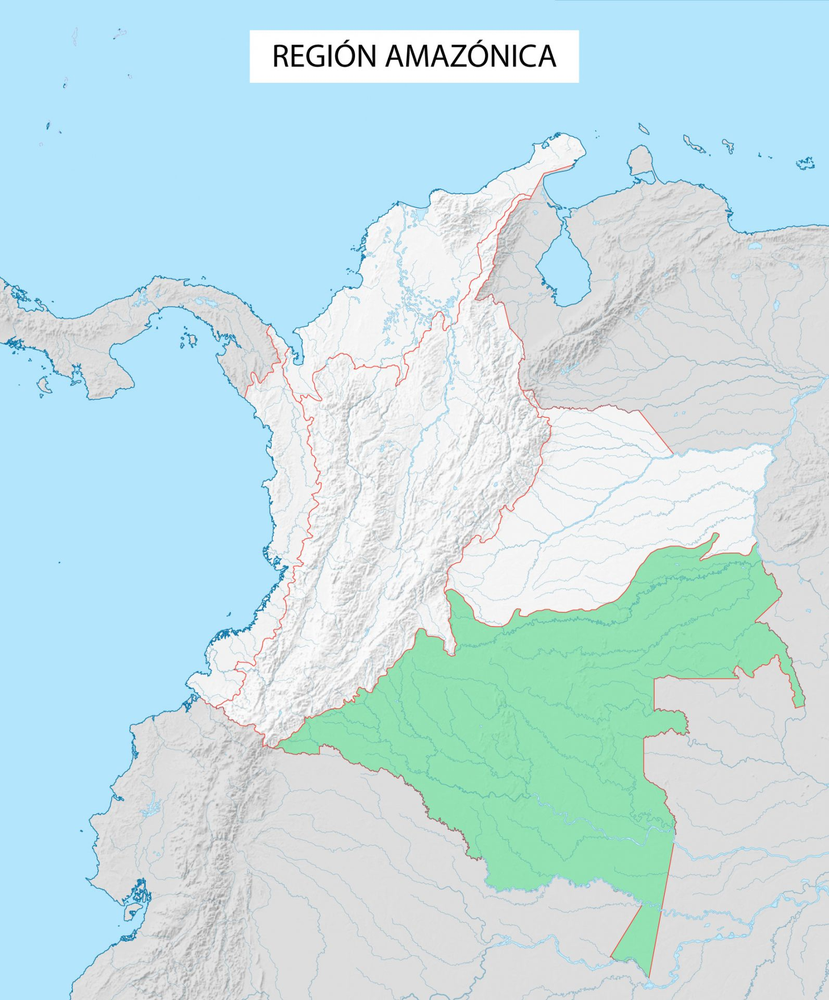
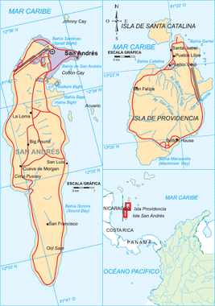

WELCOME TO ARNIM
About us?
We are a group of young people who like to travel and share
experiences with equally adventurous people. We have created a
platform for travelers to discover new places, share experiences and
grow the community of travelers in Colombia.
What is arnim?
Arnim is the translation of a word widely used in our region “patch”
Because we believe that this word transmits all the energy that
gives us to know new places.
TOURISM IN ANTIOQUIA

GUATAPÉ
TOURISM
Some tourist tours that you can do on this site are visit the Plaza de los zócalos, Malecón de Guatapé, climb the peñol stone, visit the street of memory and different aquatic recreations.

DON MATÍAS
TOURISM
In this surprising town you will be able to visit the township from Bellavista, get to know the largest clothing factory in Colombia, visit the monument to the mother, the Santander bridge, among others.
CONCEPCIÓN
TOURISM
Here you can visit the Matasano waterfall, go up to the El Alto viewpoint of the virgin, sitting in the main park José María Córdova, and walking through the clown puddle, among others.
JARDÍN
TOURISM
Here you can go hiking in the splendor cave, do coffee tours, visit the trout farms and you can have an adventure in extreme sports.
JERICÓ
TOURISM
Here you can visit the morro el Cristo, the jets of quebradona, the Jericho Museum of Anthropology and Art and the José House Museum Tomás Uribe Abad.
LA UNIÓN
TOURISM
We recommend that you dress warmly because of the low temperatures that They are presented there, here you can enjoy contact with the nature and hiking routes.
SANTA FÉ DE ANTIOQUÍA
TOURISM
Here you can walk through the historic center, enter the museum of religious art, get to know the western bridge and enjoy the cultural events and fairs.
TAMESIS
TOURISM
Here you will visit the Río Frío Spa and camping area, the organals of San Antonio, the Cartama archaeological museum and the pehispanic path.
EXPERIENCES
Here we will tell you the experiences that some have told us people who have traveled to different places in Colombia in general
Images taken from http://pexels.com

I find it incredible! all the places I have known are beautiful, colombia has many hidden paradises

It has been a unique experience, it is one of the best countries I have ever visited. visited, its culture is magnificent!

Its gastronomy is something incredible, I have connected a lot with it. nature and each of its landscapes, I would return a thousand times!
I learned about indigenous cultures, and their culture seemed surprising to me. and his way of living with nature and tending to be a life very medieval
TOURISM IN COLOMBIA
In this section you will find the destinations with the best tourist reception from each region of Colombia...
CARIBE
GUAJIRA
catedral nuestra señora de los remedios, mezquita de maicao, palomino, playa del pilón de azúcar, Punta gallinas, Riohacha, santuario de fauna y flora los flamencos, serrania de macuira.
photo taken from: https://upload.wikimedia.org/wikipedia/ commons/6/6d/Region_Caribe_de_Colombia.png
PACÌFICO
CHOCÓ
Isla gorgona, parque natural utría, Tumaco, Nuquí, Bahía Solano,
photo taken from: https://mipledianacrisprimaria.webnode .com.co/l/region-pacifico/
ANDINA

NARIÑO
laguna de la cocha,laguna verde, plaza de nariño, santuario de nuestra señora del rosario de las lajas, tumaco, volcán cumbal, cañon de juanambú, Pasto.
https://www.lifeder.com/caracteristicas-region-andina-colombia/
ORINOQUÌA
META
alto de menegua mitad de colombia , bioparque los ocarros, caño cristales, museo mirador turístico ecológico cultural la piedra del amor parrilla, parque avestruz, plaza los libertadores, parque las malocas, parque natural sierra de la macarena.
https://es.wikipedia.org/wiki/Archivo:Region_Orinoquia_de_Colombia.png
AMAZONÌA
LETICIA
parque nacional amacayacu, lago tarapoto, parque nacional natural río puré, parque natural yaigoje apaporis, puerto nariño, reserva natural flor de loto, Reserva Natural Omagua, Reserva Natural Victoria Regia.
photo taken from: https://departamentosdecolombia.com/colombia/region-amazonica/
INSULAR
San Andrés
Johnny Cay, Bahía Cove, cueva morgan, iglesia bautista de la loma, parque natural Old Providence McBeen Lagoon
https://student-sport.weebly.com/regioacuten-insular.html